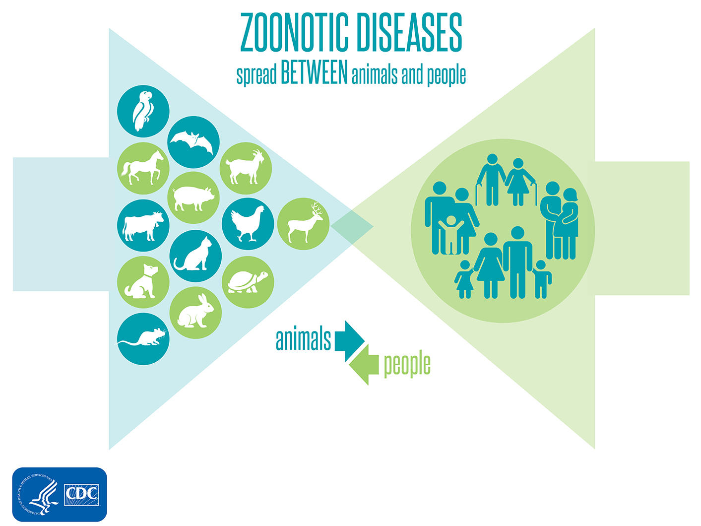

Wat zijn zoönosen?
Wat zijn zoönosen eigenlijk? Zoönosen zijn infectieziekten (bijvoorbeeld door bacteriën, virussen, schimmels en parasieten) die van dier op mens over gedragen worden. (RIVM, 2021). Het woord “zoönose” is zelf afgeleid van de Griekse woorden “zoön” dat voor “dier” staat en “noses” voor “ziekte”. Vandaar het woord “zoönose” (dierziekte), want het zijn ziekten die afkomstig zijn van dieren. (Wikipedia, 2021). Over de hele wereld maken we zoönosen mee. In Nederland komen de zoönosen COVID-19, de ziekte van Lyme, Q-koorts, toxoplasmose, salmonellose en vogelgriep voor. Wereldwijd hebben we te maken met zoönosen als Ebola, HIV, salmonellose en natuurlijk COVID-19. Er is gebleken dat ongeveer twee derde van alle verwekkers van infectieziekten afkomstig zijn van dieren. Deze infectieziekten worden op verschillende manieren over gedragen op de mens. Mensen raken besmet via voedsel; water; lucht; besmet dierlijk materiaal (zoals mest) en/of direct contact met besmette dieren. De ziekteverwekkers van zoönosen kunnen ook via teken en muggen overgebracht worden. (RIVM, 2021).
Hoe ontstaan zoönosen?
De bron waar de zoönotische ziekten ontstaan, zijn dus de dieren, want door hen raken wij mensen besmet. Als eerst neemt een dier pathogenen op in zijn lichaam. Deze ziektekiemen kun je overal vinden op aarde. De meeste ziekteverwekkers bevinden zich op verontreinigde gebieden. Dit omdat de pathogenen op die plekken niet dood worden gemaakt door (desinfectie)middelen. Zodra een dier in een onhygiënisch gebied leeft met veel van zulke ziekteverwekkers en zijn voedsel haalt uit deze verontreinigde gebieden, dan is de kans groot dat het dier deze ziektekiemen opneemt in zijn lichaam. (CDC, 2021). Eenmaal aangekomen in het lichaam van de gastheer kunnen deze verschillende ziekteverwekkers op diverse manieren de gastheer ziek maken. Als het dier ziek is, kan die ziekteverschijnselen vertonen. De dieren hoeven niet altijd ziekteverschijnselen te hebben, wanneer ze een ziektekiem in hun lichaam hebben. (WUR, 2020).
Als een ziektekiem in de gastheer zit, kan de verspreiding van deze ziekteverwekker van start gaan. Wanneer een besmet dier hoest, niest, ademt en/of lichaam(vloei)stoffen afgeeft, komen er aerosolen in de lucht. (RIVM, 2021). Dit zijn kleine vochtdruppeltjes met spore/erfelijk materialen van ziektekiemen. Zulke luchtdruppeltjes kunnen wel op grotere afstanden afgegeven worden en lang in de omgevingslucht hangen. (NOS, 2020). Zodra zo’n aerosol met de spore/erfelijk materiaal van de ziektekiem op of in het voedsel, water, lucht en/of voorwerpen komen die de mensen gebruiken, kan het zo zijn dat mensen ook besmet raken door datzelfde ziektekiem via de aerosolen. De mensen kunnen ziek worden van de overgebrachte ziektekiem, maar dat is niet altijd het geval. Onder de mensen kunnen deze ziekteverwekkers verder verspreidt worden op dezelfde manier als hoe het van dier op mens gaat. Zo ontstaan er zoönosen. (RIVM, 2021).
Voor meer informatie over zoönosen Klik Dan Hier.

Literatuurlijst